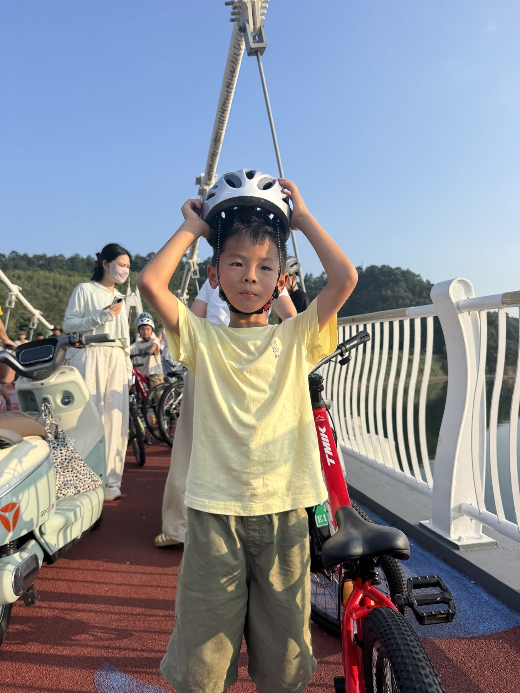
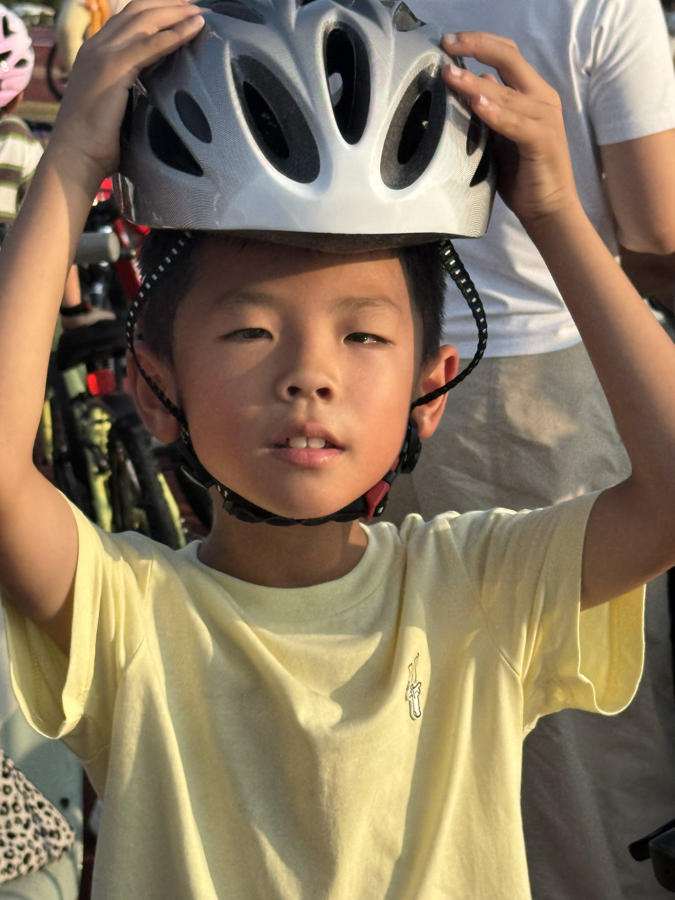
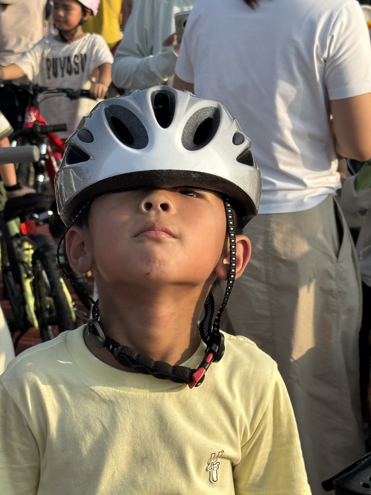
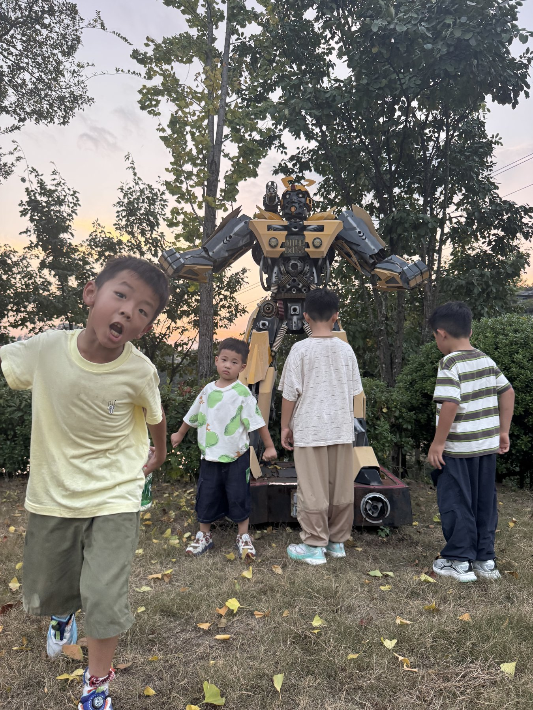
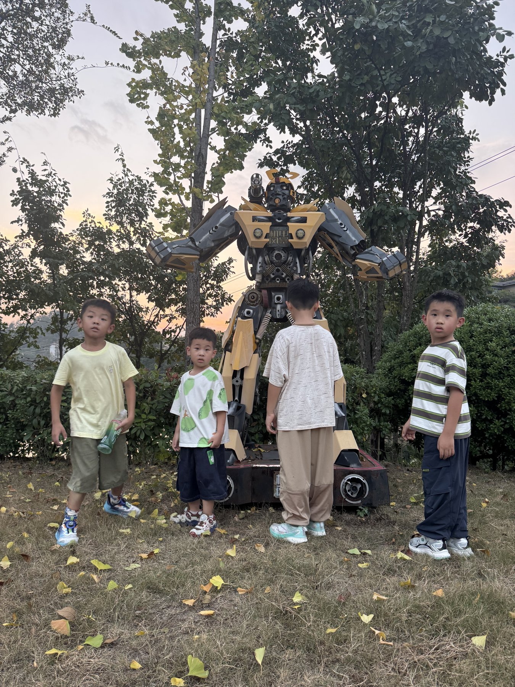

01 · 启程
先把安全戴好，再把兴奋装进头盔里
晴天把湖面晒得发亮。孩子们站在桥上，手指忙着扣紧下巴带——这一刻比任何打卡都郑重。 风从桥洞穿过来，远处青山一层层叠开，像把行程提前写好了。


02 · 湖路
沿桥骑行，千岛像散落在水面的句号
千岛湖的骑行不靠陡坡证明勇气，而靠风景把人放慢。缆索拉向天空，湖水贴着护栏安静地闪。 孩子们骑一会儿就回头喊“好远啊”，其实他们只是舍不得错过下一座岛。
- 天气晴，适合轻装
- 同伴四个孩子，一队欢声
- 节奏走走停停，看见就拍
03 · 惊喜
银杏落了一地，大黄蜂站在黄昏里
骑到一处树荫，忽然遇见高达数米的变形金刚——黄黑装甲、机械关节，像从电影里走丢的访客。 孩子们瞬间忘了腿酸，围上去合影。落叶像碎金铺在草地上，天空被夕阳染成淡粉。


04 · 短片
把这一天收成二十四秒
桥上出发、湖风同行、银杏与大黄蜂——竖屏短片，适合随手转发。
千岛湖
骑完一圈，记得的不是里程，是笑声停靠的地方
若你也带孩子来：头盔必备，节奏放慢，允许他们为路边的“大黄蜂”多停留十分钟。 千岛湖会把剩下的风景，慢慢补给回来。
回到湖面